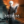

 The Medium
Details
 |
|
| Playtime | Not Played |
| Last Activity | Never |
| Added | 10/29/2021 1:32:30 |
| Modified | Never |
| Completion Status | Not Played |
| Library | Xbox |
| Source | Xbox Game Pass |
| Platform | PC (Windows) |
| Release Date | 1/28/2021 |
| Community Score | |
| Critic Score | |
| User Score | |
| Genre | |
| Developer | Bloober Team |
| Publisher | Bloober Team S.A. |
| Feature | |
| Links | |
| Tag | Game Pass |
Description
Discover a dark mystery only a medium can solve. Travel to an abandoned communist resort and use your unique psychic abilities to uncover its deeply disturbing secrets, solve dual-reality puzzles, survive encounters with sinister spirits, and explore two realities at the same time.
The Medium is a third-person psychological horror game that features patented dual-reality gameplay and an original soundtrack co-composed by Arkadiusz Reikowski and Akira Yamaoka.
BECOME A MEDIUM
Wield unique psychic abilities reserved for those with the gift. Travel between the realities or explore them both at the very same time. Use the Out of Body experience to investigate places where your real-world self can’t go. Create energy shields and deliver powerful spirit blasts to survive the spirit world and its otherworldly dangers.
SEE WHAT’S HIDDEN
Delve deep into a mature and morally ambiguous story, where nothing is what it seems and everything has another side. As a medium you see, hear and experience more than others, and with every new perspective you will change your perception on what happened at the Niwa resort.
PLAY IN TWO WORLDS AT THE SAME TIME
Never-seen-before and officially patented gameplay that plays out across two worlds displayed at the same time. Explore the physical world and the spirit world simultaneously, and use the interactions between them to solve dual-reality puzzles, unlock new paths, and awaken memories of past events.
ENTER A DARK REALITY INSPIRED BY BEKSIŃSKI
The Medium’s spirit world is a dark mirror reflection of our reality, a grim and unsettling place where our unpunished deeds, evil urges, and vile secrets manifest themselves and can take on a form. This world has been invented and designed under the inspiration of Zdzisław Beksiński’s paintings, Polish dystopian surrealist internationally recognized for his distinctive and strikingly ominous style.
MUSIC BY YAMAOKA & REIKOWSKI
Immerse yourself in the disturbing and oppressive atmosphere of the game thanks to the original ‘dual’ soundtrack co-created by Akira Yamaoka and Arkadiusz Reikowski. Yamaoka-san is a legendary Japanese composer best known for his work on the Silent Hill series; Reikowski is a Hollywood Music in Media Awards nominee who worked on such acclaimed horror games as Blair Witch, Layers of Fear, and Observer. Now they join their creative forces for the music and songs of The Medium.